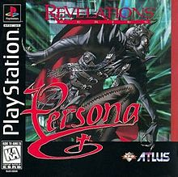
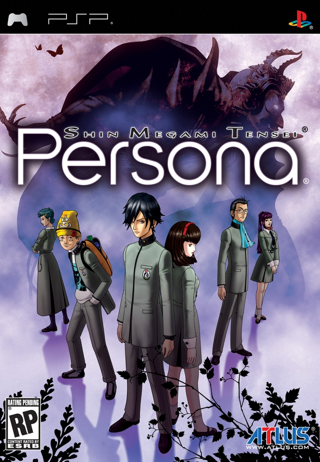
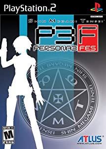
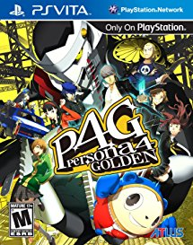

The Persona Series
What is the Persona series?
Persona, also known as Shin Megami Tensei: Persona, is a video game franchise developed and primarily published by Atlus. Focusing around a series of role-playing video games, Persona is a spin-off from Atlus' Shin Megami Tensei franchise, and was originally based on the high school setting of Shin Megami Tensei: If... The first entry in the series, Revelations: Persona, was released in 1996. There have since been five further main titles, with the most recent, Persona 5, being released in 2017. Numerous spin-offs have also been developed. The series takes its title from beings summoned by characters in battle, manifesting from their personality.
Persona began as a spin-off based on the positively-received setting of If.... Its trademark features include a high school setting, a group of students as the protagonists, a silent protagonist similar to the mainline Megami Tensei franchise, and combat using Personas. Since the release of Persona 3 in 2006, the main series has used a social simulation function called Social Links, which is directly linked to how Personas evolve. Central character designs are by series co-creator Kazuma Kaneko (Persona and the Persona 2 duology) and Shigenori Soejima (Persona 3 onwards). Its overall theme is exploration of the human psyche and how the characters find their true selves. The series' recurring concepts and design elements draw on Jungian psychology and archetypes, along with religion, mythology, and popular literature.
All sections shown here are previews of their respective pages. To access said pages, either click on the game's image, or scroll to the bottom of the page and click "More Info".
Games In The Series
Revelations: Persona \\ Shin Megami Tensei: Persona
Revelations: Persona is a role-playing video game developed and published by Atlus. It is the first entry in the Persona series, itself a subseries of the Shin Megami Tensei franchise, and the first role-playing entry in the series to be released in the west. Originally released for the PlayStation in 1996 in Japan and North America, the title was ported to Microsoft Windows in 1999. A port to the PlayStation Portable retitled Shin Megami Tensei: Persona was released in North America and Japan in 2009, and the following year in Europe. This port featured new cutscenes and a reworked English localization.
The story focuses on a group of high school students as they are confronted by a series of supernatural incidents. After playing a fortune-telling game, the group each gain the ability to summon Personas, the multiple selves within them. Using this power under the guidance of Philemon, a benevolent being representing humanity's subconscious, the group faces off against multiple forces that threaten the world. Gameplay revolves around the characters navigating environments around their town and fighting enemies using their Personas. During the course of the game, the player can create new Personas for battle using spell cards gained in battle or by talking with enemies.
Shin Megami Tensei: Persona 2: Innocent Sin \\ Eternal Punishment

Persona 2: Innocent Sin is a role-playing game where the player takes control of a group of high school students as they explore the fictional city of Sumaru. The camera follows the party from an adjustable angled overhead perspective. The city in general is navigated using an overworld map. The game's main party holds up to five characters. Whenever the party is in a "safe" area (i.e. a room with no demon encounters), each party member can be conversed with. The party's route through dungeons can be traced using the Auto-Map, a basic floor plan of the current dungeon. As the main character moves around, the map will automatically mark new areas.[5] A key gameplay and story element is the Rumor system: if the party hears a rumor from an NPC, they can spread that rumor using the Kuzunoha detective agency, making the rumor become real and creating effects on the environment. These effects can range from making an accessory or character-specific weapon appear, to triggering the appearance of new shops for the party's use.

Eternal Punishment takes place in the fictional Japanese city of Sumaru, and is a direct sequel to Persona 2: Innocent Sin. Taking place a few months after Innocent Sin, the game follows reporter Maya Amamo as she investigates the Joker Curse, a malign phenomenon where people's wishes and rumors are coming true and causing chaos. During her investigations, she and others who join her gain the ability to summon Personas, personified aspects of their personalities. The gameplay features turn-based battle gameplay, where characters use their Personas in battle against demons, and a separate Rumor system, where rumors spread around the city can influence events in the characters' favor.
Shin Megami Tensei: Persona 3 \\ FES \\ Portable

Persona 3 is a role-playing video game developed by Atlus, and chronologically the fourth installment in the Persona series, a subseries of the Megami Tensei franchise. Persona 3 was originally published in 2006 on the PlayStation 2 by Atlus in Japan; the North American release of the game was delayed due to issues with the publication of the official art book. An add-on disc titled Persona 3 FES, containing a "director's cut" of the original game, as well as a new epilogue, was released alongside Persona 3 in Japan in 2007, and in 2008 in other territories, with a re-release of FES on the PlayStation Network in 2012.
Persona 3 FES is an enhanced rerelease of Persona 3 for the PlayStation 2. It contains an estimated 30 additional hours of gameplay over the original Persona 3, most of which comes in the form of an epilogue called The Answer, also known as Episode Aegis in the Japanese version. The game was rereleased as a downloadable game on the PSN for the PS3 in 2012, but only in North America and Europe.
Persona 3 Portable is a port of Persona 3, released for the PlayStation Portable. It can also be played on PlayStation Vita / PlayStation TV via the PlayStation Store through backwards compatibility.
Shin Megami Tensei: Persona 4 \\ Golden

Persona 4 is the fifth game in the Persona series. The game was developed by Atlus for the PlayStation 2, and was ported to the PlayStation 3's PlayStation Store as a downloadable classic akin to Persona 3 FES, but only in North/South America. 
Persona 4 takes place in the fictional, rural Japanese town of Inaba, which lies among floodplains and has its own high school and shopping districts. Unexplained murders have taken place in the small town, where bodies are found dangling from television antennas and their cause of death being unknown. At the same time, rumor has begun to spread that watching a switched-off television set on rainy midnights will reveal a person's soulmate. The game also follows the main characters into the TV World, a fog-shrouded realm filled with monsters called Shadows, which can only be accessed through TV sets.
An enhanced port of Persona 4, Persona 4 Golden, was released for the PS Vita / PS TV. It has many new features and is often recommended to first-time players. However, it does not necessarily replace the original PlayStation 2 version; Persona 4 enthusiasts may still find value in the original version as Golden re-did certain enemy stats, dungeon aspects, voices for Chie and Teddie, etc.
Shin Megami Tensei: Persona 5

Persona 5 is a fantasy based on reality which follows a group of troubled high school students: the protagonist, and a collection of compatriots he meets. These disturbed and troubled teenagers gradually realize that they are living in a toxic and dangerous world resembling a prison full of slavery, oppression and injustice, ruled by corrupted and twisted adults. They can't live with the system and can't live without it, and simply existing means they are at risk of being doomed and condemned to a life of slavery. In order to seek freedom, liberation and justice, they live dual lives as rebellious Phantom Thieves of Hearts. Using a mysterious smartphone app and a cat who can transform, they undertake fantastical adventures by using otherworldly powers to enter the hearts of people (specifically, corrupt adults in positions of power) in order to re-shape and transform them.